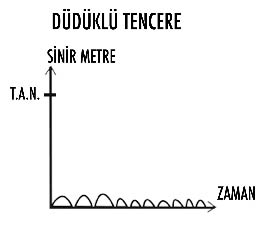

Hadhira
ADIM VII: AHENK (UYUM) “DENGE” ÜZERİNDE VAR OLMAK...
Bileşik kaplar prensibini çok insan bilir!
Bu fiziksel bir kanundur!
Farklı su seviyelerindeki birbirine bağlı kaplar yan yana konulduğunda bir müddet sonra atmosfer basıncı; kaplar arasında dengelemeyi sağlayarak su seviyelerini muhakkak eşitleyecektir.
Evrensel bir kaide olan “denge”, insan bedeni için de elzemdir.
Yıllar evvel dengelemeleri öğreten hocama “Bunları neden yapıyoruz?” diye sorduğumda bana şöyle karşılık vermişti: “Ruhsallığımızı artırmak, şifa yeteneğimizi geliştirmek ve çakralardaki enerji merkezlerini düzenlemek için yapıyoruz.”
Hocama bunların var olduğundan emin olmadığımı, hissedemediğimi söylediğimdeyse “Metin Spiritüel yaşam ayrı, bu yaşam ayrı” diyerek karşılık vermişti. Aslında işin aslı öyle değildir. Bugüne kadarki bütün öğretilerde iki yaşam olduğu yanılgısı hâkimdi. Aslında tek bir yaşam vardır. Ruhsal olarak yaptığın her çalışma, fiziksel gerçekliğini de etkiler.
Enerji merkezlerinin birbiriyle uyum ve ahenk içinde muazzam bir denge üzerinde çalışması; başta şimdiki seni, daha sonra da bütün deneyimlerini değiştirecektir.
“Yaşam” ve “ruhsallık” birbirlerinden bağımsız iki apayrı konu değillerdir. İkisi tam ve bütündür. İşte bu yüzden yaşam ve ruhsallık birbiriyle denge üzerinde ve uyum halinde olmak zorundadır.
Bugün yaşadığın hayatın içinde hangi noktada sıkıntı, zorluk, mutsuzluk, tatminsizlik, yetersizlik ya da hastalık deneyimliyorsan bilmelisin ki; bedenindeki enerji merkezlerinden bir ya da birkaçı arasındaki denge yitirilmiştir.
Kâinatta her şey ancak bir uyum ve denge söz konusuysa var olabilir. Gezegenler, yıldızlar ya da mevsimlerde yaşanabilecek en küçük bir dengesizlik bile yeryüzündeki doğal yaşamı ya zora sokacaktır ya da sonlandıracaktır.
Bu yüzden bedeninde herhangi bir enerjisel dengesizlik söz konusu olduğunda, bu sapma seni ya kalitesiz bir hayata mahkûm edecektir ya da yaşamsal faaliyetlerini sürdürmekte dahi sıkıntı yaratacaktır.
İnsan bedenindeki enerji merkezlerinin neden ve nasıl dengelenmesi gerektiği hakkında merak ettiğin bütün soruları da yanıtlayarak detaylı açıklamalardan ve örneklerden bahsedeceğim. Şimdi anlatacağım konuların pek çoğunun kendi hayatında tecrübe ettiklerine benziyor olmasına şaşırsan da var oluşunda denge yaratmak konusunda sana yardım edebileceğime güven ve okumaya devam et...
Öğreteceğim dengelemenin ne olduğunu anladığında ve denge egzersizlerini uygulamaya devam ettiğinde bugün yaşadığın birçok sıkıntının giderek ortadan kalkacağını vaat ediyorum!
UYARI: Kitabın bu sayfasından itibaren amacım, hayatınla ilgili yaşamış olduğunuz problemlerle seni yüzleştirebilmek olacaktır. Bugün etrafındaki pek çok kaynak (anne, baba, öğretmen, arkadaş, akraba, medya vs.) senin yaşadıklarından dolayı hep karşısındakileri ya da dış etkenleri sorumlu tutuyorlar.
Bu konuda sana bir iyi, bir de kötü haberim var!
Kötü haber: Sorun karşındakinde değil.
İyi haber: Çözüm sende.
Amacım seni suçlayarak kendini kötü hissettirmek değil. Fakat sana garanti ederim ki, yaşadığın sorun önceki hayatlarından (reenkarnasyon), Satürn’ün yörüngesinden, önceden yaptığın yaşam kontratlarından, varoluşun seni sınamasından, alınyazısından, kaderinden, falcının söylediklerinden dolayı değil...
Hayatım boyunca her kalbim kırıldığında ve sorunlarla her karşılaştığımda dışarıdan birinin yaşadıklarımın benim yüzümden olmadığını söylemelerini umdum. Hatta yaşadığım bir ilişkimdeki sorunumun o kişinin annesinin geçmiş hayatta benim sevgilim olmasından olduğunu söyleyen bir terapistin, beni oldukça rahatlattığı bile olmuştur. İçimden “Evet, tabii ki sorun bende değil. Biliyordum başka bir şeyler olduğunu” dediğimi gayet iyi hatırlıyorum.
Sana açıkça itiraf etmek isterim ki; ben değişene kadar, hayatımda hiçbir şey değişmedi.
İnsanlar her zaman için beta beyin dalgasında oldukça “kurban bilinci”ni destekleyen açıklamaları severler. Hayatlarını nasıl yarattıklarını anlamayacak kadar kör oldukları için, hep suçlayacak başka bir neden ararlar. Etrafına bir bak? Birçok kitap, şarkı, yayın bu bilince hizmet ettiği için kitleleri harekete geçiriyor.
Bu yaklaşım kişiyi uzun vadede hep mutsuzluk içinde bir yaşama götürüyor. Falcılara gidip kendi geleceğini öğrenmeye çalışan, sürekli erkekler/kadınlar hakkında şikâyet edip duran ve yardımı sürekli dışarıda arayanların hiçbiri mutlu olamazlar. Günümüzde insanlar yazık ki kurban bilinçlerini besleyen açıklamaları çok seviyorlar. Böyle yaptıklarında yaşadıkları mutsuzluğun sorumluluğunu üstlenmemiş oluyorlar. Buna rağmen sen, yaşamın sorumluluğunu alsan da, almasan da, sorumluluk omuzlarındadır.
Bulutların arasından kutsal varlıkların ya da varoluşun ellerini aşağıya doğru uzatıp senin yaşamını değiştirmesini beklersen, emin ol çok bekleyeceksin. Savaşın içinde kalan çocuklar, sistematik vahşete uğrayan hayvanlar, toplama kamplarındaki insanlar da o kurtarıcı eli çok beklediler... Hiçbir zaman bulutlar yarılıp da bu kötülüğü sonlandıracak kutsal varlıklar ortaya çıkmadılar. İnsanoğlunun yarattığı vahşeti hiçbir ilahi varlık durdurmadı. Çünkü burası özgür irade seçim alanıdır.
Bu arenada, “varoluş” sadece gözlemcidir, asla durumlara müdahale etmez.
“Kuru duayı bırak, ağaç isteyen tohum eker.”
– Mevlana
Sevgili ruhparçam, yaşadığın bütün bu hayatın ve şu dünyanın sorumlusu sensin. Biliyorum gözlerinin önünde bir cehennem varken bunu kabul etmek zor. Ama hakikat budur.
İzin verirsen kalbine bir hakikat fısıldayacağım:
“Sen varoluşun yeryüzündeki ilahi ellerisin.”
Bana güven. Cennet ihtimali çok yakın...
İstila başlıyor...
YAŞAM KANUNU - DÖRT DENGE
KÖK ÇAKRA + ALIN ÇAKRASI
(MADDİ - MANEVİ DENGE):
Kök çakranın dünyayla yani “maddi” olanla yaşantımızı belirlediğini daha önce anlattım. Buna göre alın çakrası diğer bir adıyla üçüncü göz enerji merkezinin de beş duyu ötesiyle kurduğumuz manevi bağlantı noktamız olduğunu da hatırla.
Kök çakra ve alın çakrasının dengelenmesi; maddi ve manevi uyumun sağlanması anlamına gelir.
Dikkat edersen; günümüzde bu konuyla ilgili pek çok insan, ciddi sorunlar yaşamaktadır. Son yıllarda herkesin maddiyata yöneldiği iddia edilse de, ben aslında tam tersi bir eylemin de söz konusu olduğunu düşünüyorum. Ancak maddiyatla maneviyat arasında olması gereken dengeyi oluşturamayan insanlar kaçtıkları bu iki ayrı uçta yazık ki ne mutlu olabiliyorlar ne de yaşamlarından haz alabiliyorlar.
Maddi-manevi enerjiler, dengesiz olduğu sürece her şekilde yaşamında problem söz konusudur.
Tamamen maddiyatta yaşayan insanlar, senin de sıkça gözlemleme imkânı bulduğun sayısız örneklerden de anlayabileceğin gibi çok büyük bir cehennem azabı içindedirler. Yazık ki hayatlarında deneyimleyebilecekleri hazlar son derece sınırlıdır. Maddi tatmin ancak bir noktaya kadar vardır ve o noktadan sonra artık hiçbir maddiyat insanın ihtiyacı olan haz ve doyumu satın almaya yetmeyecektir. Maddi açlığın sonu da yoktur, doyumu da...
Geçtiğimiz aylarda İnsanagüven ailesi olarak yaklaşık 250 kişilik bir grupla üçüncü festivalimizi yaptık ve döndüğümüzde karşılaştığım bir arkadaşım bana bu festivalden kaç para kazandığımı sordu. Ben de kendisine para almadığımı, ilk festivalin geliriyle İnsanagüven ailesi adına orman yaptığımızı, ikinci festivalin kazancını WWF’ye (Dünya Doğayı Koruma Vakfı) ve son festivalden kazanılanı da Kansersiz Yaşam Derneği’ne verdiğimizi anlattım. Arkadaşım yaptığım açıklamadan o kadar tatmin olmuyordu ki “Hadi hadi... Cebine kaç para indirdin?” diye sormaya devam etti. Karşımda tamamen maddiyatta yaşayan bir adam vardı. Benim yaptığım yardımlardan aldığım hissi anlaması ve bunu benimle paylaşması imkânsızdı. İnsanagüven ailesinin bu festivallerden elde ettiğini paylaşarak yaşadığı manevi doyumu, onun hiçbir parayla satın alması ve tecrübe etmesi mümkün değildi.
Yaşamı maddiyattan ibaret sanan, bond çantalarıyla devasa plazalarda büyük işler halleden, pahalı arabalara binen, saygı gören ve takdir edilen pek çok insan; yazık ki aşkı seks, aile sevgisini hormonal reaksiyon, mutluluğu da para sanarak yaşamına devam ediyor. Hissettiği eksiklik, doyumsuzluk ve tatminsizlik hissinin nereden kaynaklandığını, bunca varlığa rağmen ne kadar az güldüğünü ve hayatla neden eğlenemediğini maalesef kendisine bile açıklayamıyor.
Ofisim her gün trilyonları olan işadamları ve işkadınlarıyla dolup taşıyor. Hiçbiri mutluluğu satın alabilecek paraya sahip değiller. Hırslarının doyumsuzluğu ve kalplerinin boşluğuyla kendilerini neden iyi hissetmediklerini ve neden giderek hasta olmaya başladıklarını öğrenmek istiyorlar. Hepsinin seanslar sırasında bana sordukları tek ortak soru şudur: “Metin biz kendimizi nasıl daha iyi hissedebiliriz?”
Sana bir sır vereyim mi?
Aslında “yaşam” görünmeyende saklıdır ve
bütün değerler de hep ordadır...
Ben de, beni ben yapan şeyleri masaya yatırdım ve sonunda
gözümün önünde sadece tek bir masa kaldı.
Beni ben yapanlar, görünmeyen değerlerimdir...
Bunu bilmeyen milyonlarca insan, dünyanın bugün yaşadığı mutsuzluğu ve sevgisizliği de beraberinde yaratmışlardır. Babasıyla iş, kariyer, maaş ve geçim yolları dışında konuşacak bir şeyi olmayan evlatlar ne hayırlı çocuklardır ne de o babalar sevgi dolu iyi babalardır! Anne, baba, eş ve çocuklarıyla sadece materyalde buluşanlar, bu tutsaklığı yazık ki hayat boyu yaşarlar ve işin üzücü tarafı da şudur ki bu tutsaklıklarının farkına bile varmazlar.
Maddi-manevi dengesizlikte maddiyata kayan insanlara çok uzun zamandan beri rastlıyor, onları kendi hayatlarımızda da sıkça deneyimliyoruz.
Maneviyata yoğunlaşanlar ise özellikle Batı kültürlerinde çok daha kısa süredir dikkat çekmeye başladılar. Dinlerin öğretileriyle yüzlerce yıldır olan ancak popüler kültürün içine Spiritüel kişiler ve ekollerle yeni giren maneviyata yöneliş eğilimi de sağlıklı bir denge üzerine kurulmadığından, burada da büyük saçmalıklara rastlıyoruz.
Spiritüelliği dünyayla olan bütün bağlantıları koparmak, dünyevi olan her şeyi aşağılayıp, küçümsemek ve reddetmek sanan insanlar, aslında maneviyata yönelmemişlerdir. Manevi olduğunu düşündükleri bu sanrının içine kaçıp sığınmışlardır. Burada yaşadıkları şey maneviyat ya da Spiritüellik değil, yanılsamadır... Dünyevi hiçbir şeyden haz almayıp tamamen ruhsal alanda var olmak, aslında hem maddiyattan hem de maneviyattan “kaçış”tır...
Evde sevmediği bir adamla ömür geçirmeye çalışan, çocuklarına farkındalıklı annelik yapamayan, üretmeyen, kazanmayan, gülmeyen, paylaşmayan, saygı görmeyen ve kozmetik katalogları karıştırarak yaşadığı günü iyileştirmeye çalışan bir kadın, gittiği içi boş seminerlerde kendisinin aslında varoluş olduğu fikrini duyarak sadece geçici ve uçucu anlık rahatlamalar yaşar. Hayatta kimse için işe yarayacak tek bir faaliyeti olmayan, paylaşmayan, sevmeyen, kendisine saygı duymayan insanların evrenselliği deneyimlemesi imkânsızdır. Kozmetik kataloglarında aradığın anlık rahatlamalardaki sen varoluş değilsin, o sen sadece varoluş potansiyeline sahip bir sensin...
Bu tür insanlarda bir müddet sonra dengesizlik başlayacaktır. Çocuklarından, eşinden ve etrafındaki insanlardan saygı görmediğinden, Spiritüel gruplar içinde varoluş olduğu fikrine inanmak temelsiz de olsa çok daha hoşuna gidecektir. Fakat bu algı biçimiyle evrenselliği tecrübe etmesi mümkün değildir çünkü her şeyden önce kendi öz saygısını yaratacağı o hayatı var etmesi gerekir...
İnsanlar özledikleri o “kendini değerli hissetme” arzularından dolayı maneviyata yönelmek ve bu duygusal kaçışlarla anlık bile olsa rahatlamak hedefindeler. Fakat şunu unutuyorlar ki bütün bu anlık rahatlamaların ruhsallıkla ilgisi yoktur. Bunun adı maneviyatı tecrübe etmek değildir.
Bir gün şehir dışına giderken otobüste bir hocanın etrafına genç kızlardan ve erkeklerden küçük bir grup oluşturduğunu ve onlara Şamanizm’den bahsettiğini gördüm. Grup bir süre sonra o kadar kontrolden çıktı ki kızlar sinir krizi geçirir gibi kendilerini hırpalayarak bağırmaya ve tuhaf kelimeler sayıklamaya başladılar. Hoca sözde onları Şaman dili konuşturmaya başlamıştı. Otobüsteki erkeklerden biri de eline bir anten alarak, bu alet aracılığıyla koltukla muhabbete daldı. Koltuğa soru sorduğunu ve ondan yanıt aldığını söyledi. Zavallı bir keşmekeşin ortasında gördüklerime inanamayarak olan biteni izledim. Bir müddet sonra trafik polisleri otobüsü durdurduğu halde kendilerini hırpalayan ve garip kelimeler bağıran kızlar bu histerik eylemlerinden vazgeçmediler. Polis gençlerin uyuşturucu almış olabileceğinden kuşkulanarak, her birini tek tek aşağıya indirip aramaya başladı. Durum o kadar içler acısıydı ki kendilerine yaşattıkları bu saçma kurgunun evrensellikle zerre kadar ilgisi olmadığını anlamayan gençler, mutlu olmak için mutsuzluktan delirerek kaçmak gerektiğini sanıyorlardı.
Bundan yaklaşık on beş yıl kadar önce ben ve arkadaşlarım Şirince’ye sık giderdik.
Hayır! Hiçbir Spiritüel gerekçesi yoktu bu seyahatlerimizin... Şirince gayet sakin, doğası, havası ve ortamı güzel bir tatil beldesiydi bizim için, hepsi bu... Fakat daha sonra 2012’de kıyametin kopacağı ve sadece Şirince’nin ayakta kalacağı söylentisi çıkınca bu ıssız kasaba birden insan akınına uğramaya başladı ve ben hayatım boyunca rastlayamayabileceğim Spiritüel saçmalıklara ve maneviyat sömürüsüne burada şahit oldum.
O dönemlerde Türkiye’nin ünlü Spiritüel hocalarından biri durup dururken Şirince’den arsalar satın almaya başladı. Hatta işi o kadar abartmıştı ki mevcut arsalar tükenince imar izni olmayan dağı bile parsellemişti. Daha sonra 2012’de kopacak olan kıyametin nasıl yaşanacağı ve bunun için neler yapılması gerektiği konusunda katılım ücreti hayli yüksek seminerler vermeye başladı. Görünen o ki, 2012 yılında Şirince dışında bütün dünyayı yok etmeye karar vermiş olan varoluş; kişisel gelişimcilere verecek parası olanlara torpil yapacaktı. Milyonlarca insan, varoluşun bu kadar ayrımcı ve şuursuz olamayacağı gerçeğine ayılamadı ve kıyamet senaryolarının peşinden sürüklenerek gitti.
“Dönüşüm” bir tarihle, bir insanlar ilgili değil. İsa’nın doğumundan sonra dünya güneşin etrafında 2012 kez döndüğünde uyanış olmayacak. Sevgili ruhparçam! “Uyanış” bizim evrimlerimiz ve farkındalık yolculuğunda kitlesel anlamda adım atmamızla olacaktır. Önceden belirlenmiş bir yer, zaman ya da kişi söz konusu değildir. Ama sen illa ki kutsal bir kişi, önemli bir tarih ve mekân arayışında ısrarlıysan, sana şu şekilde yardımcı olabilirim:
Uyanışın yeri: Dünya
Uyanışı başaracak kişi: Sen
Uyanış zamanı: Şimdi
İnsanlar sanrıya inanmaya o kadar hazır ve öylesine ciddi bir algı körlüğü yaşıyorlardı ki 2012 Kıyamet Senaryosu üzerinden binlerce kişisel gelişimci hayatları boyunca kazanamayacakları büyük paralar elde ettiler. Hatta içlerinden bazılarına “2012 yılı geçtiğinde bu insanların yüzüne nasıl bakacaksınız?” bile dedim... Onlar bu işten de sıyrılmanın bir yolunu bulmuşlardı ve kıyametin aslında bir uyanış olduğunu anlatmaya başladılar.
2014 yılını yaşadığımız günümüzde; etrafına bir bakar mısın lütfen, dünyada ne oranda bir aydınlanma ve uyanış yaşanmış?
Değişen hiçbir şey yok değil mi?
Dünyada hâlâ savaşlar var, çocuklar kimyasal silahlarla öldürülüyor, hâlâ din faşizmi var, kutuplar hâlâ eriyor, fok balıklarının derileri canlı canlı yüzülmeye devam ediyor, tecavüzler yine sürüp gidiyor...
Görülen o ki, ne değişen bir şey var ne de dönüşen... Milyonlarca insan; sömürüldü, kandırıldı ve aldatıldı...
Bu yaşanan saçmalıkların adına maneviyat diyemeyiz...
Evrenselliğin deneyimlenebileceği gönül ve algı seviyesi bu nokta değil!
Bir gün yine bir tanıdığım beni arayarak “Metin, Hindistan’dan aydınlanma enerjisi geldi” dedi...
Dondum kaldım! Evrende hepimiz ve her şey başlı başına enerji bulutuyken, bir kişinin valizini kaptığı gibi Türkiye’ye aydınlanma enerjisiyle birlikte gelmesi çok garipti...
Konuya olan ilgimi korumaya devam ederek Hindistan’dan gelen şeyin tam olarak ne olduğunu sordum. Gelen meğer Spiritüel bir şahısmış ve dokunduğu insan da “bam” diye aydınlanıveriyormuş...
Ben yıllarımı dünyanın sayısız ülkesinde en iyi Spiritüel hocalardan geceli gündüzlü eğitimler almaya adayım, aydınlama yolunda kendime bunca emek ve zaman harcayım, bir tane hoca gelsin birine dokunsun ve o kişi birdenbire aydınlansın! “Şahaneymiş...” dedim. Gündüz hasta bakıp kazandığım parayı akşam saatlerinde aydınlanma enerjisi satan Hint kökenli hocaya yatırıyordum. Hoca, katılımcıları inci gibi dizmiş her birinin yanına tek tek uğruyordu. Sıra benim kafama geldiğinde ellerini tepeme yerleştirdi ve birkaç saniye sonra çekip gitti. Aydınlanma hissetmediğim gibi her gece bu kısa süreli kafa temaslarına 100 dolar harcamaktan da sıkıldım. Kafa başına her akşam 100 dolar toplayan Hint kökenli hocaya Türkiye’nin her yerinden akın akın insanlar geliyordu.
Tam da aydınlanmaktan vazgeçip, harcadığım dolarların üzerine bir bardak soğuk su içmeye hazırlanıyordum ki o akşamki seans sırasında içeriden bir kız koşup yanıma geldi ve “Metin, müjde... İçeride bir kadın aydınlandı” dedi. Kadın nasıl oldu da bir anda Budha’ya dönüşmüştü çok merak ettim. Spiritüel hırslarım ve egom bunu öğrenmeden o kadının peşini bırakmamam gerektiğini söylüyordu. Artık aydınlanan o kadını bir saniye bile yalnız bırakmıyordum. Aydınlanma derken tam olarak ne kastettiğini, ne gördüğünü ya da ne hissettiğini sorup duruyordum. Kadının verdiği cevaplar o kadar kısır ve tutarsızdı ki aslında en kötü kişisel gelişim kitabında bile daha iyi bir açıklama okuyabilirdim.
Daha sonra aynı grupla şehir dışında kapma gitmeye karar verdik ve ben arkadaşlarımla turistik fotoğraflar çektirirken yine aynı haberci kız yanıma gelip “Metin koş koş... A. Hanım fenalaştı. Yetiş!” diye bağırdı. Ben de heyecanla otele doğru koşmaya başladım ki attığım üç dört adımdan sonra durup arkama baktım ve haberci kıza “İyi de o A. Hanım... Bizim aydınlanan hanım değil mi?” diye sordum...
Gerçekten günlerdir peşinden koştuğum aydınlanan kadın krize girmişti ve ben otele gidene kadar aydınlanmış bir insana nasıl kalp masajı yapmam gerektiğini düşünüp durdum. Salona girdiğimdeyse gördüğüm şey tam bir hayal kırıklığıydı. Bizim aydınlanan hanımımız içine şeytan girmiş gibi yere yuvarlanmış, deli gibi debeleniyordu. “Bu dünya iğrenç... Burada her şey yalan. Defolun pis insanlar. Ben melekler âlemindeyim” diye düğümlendiği yerden haykıran kadını izlerken “hormonlu aydınlanma bu olsa gerek” diye düşündüm.
Bütün bu hikâyeleri anlatırken aslında Spiritüelliğin evrenselliğin ve maneviyatın ne olmadığını izah etmeye çalışıyorum sana... Bahsettiğim bu tip insanlarla kuşatılmış olduğunun farkında mısın bilmiyorum ama, şunu açıkça söylemek zorundayım ki; maneviyatın içinde dünyevi olanı aşağılamak ya da dışlamak asla yoktur!
Bir insanın doygunluğunu, onun dünyayı hor görüp aşağılamamasından anlayabilirsin.
Spiritüellikte böyle bir moda akımı olduğunu biliyorum. Yaşadığı gerçekliği küçümseyen, dünyada olan her şeyi fani bulanlar, maneviyata daha yakın olduklarıyla övünürler. Pek çok din adamı da dünyada olan bitenin hayal âlemi olduğunu, gerçek hayatın öteki dünyada başladığını anlatırlar. Hiçbir dinde, hiçbir öğretide ve hiçbir kutsal kitapta dünyevi varlıklar ya da olgular aşağılanmaz. Kutsal kitapların hepsi insanın dünya üzerindeki yaşamını tertipleyip düzenlemek ve böylece maneviyatını daha kolay ve güçlü tecrübe etmesini sağlamak amacıyla düzenlenmiştir.
Bu dünyanın üzerinde doğru yaşamasını bilen insanlar, kendi içsel yolculuklarını başarabilirler...
Yaşadığı hayatın tadına varmayı bilmeyen hiç kimse aydınlanmaktan bahsedemez.
Maddi olanla ilişkini düzenlemeden, manevi olanla bağlantını şekillendiremezsin.
İşte sistem bu kadar basit...
Dünyada yediğinden, içtiğinden, yaşadığından haz almayıp, sevmeden, gülmeden, paylaşmadan, üretmeden yaşayarak evrenle öfke, kırgınlık ve nefret ilişkisi kurduğunda kaçtığın hiçbir maneviyat sana evrenselliğini yaşatmayacaktır...
Benim sufi hocam, konuyu çok güzel bir örnekle anlatırdı. “Pergel gibi olacaksın oğlum! Bir ayağın toprağa basacak, diğeriyle dilediğin kadar etrafta dönebilirsin” derdi. Gerçek Spiritüel hocaların ayaklarının biri yaşadıkları dünyaya saplıdır ve bunun da hazzı içindedirler.
Kökleri olmayan bitkinin yaprakları olmaz.
İyi bir Spiritüel hocayı nasıl tanırsın biliyor musun?
Maneviyatla ilgili bir iş yapmasaydı bile, bu dünyada başarılı ve mutlu bir hayat sürecek zenginlikte oluşundan...
Bu dünyada gerçekten köklenip dilediği hayatı yaratabilen ve bunun hazzında yaşayabilen insanlar, aynı zamanda iyi bir Spiritüel hoca olabilirler.
Din adamlarına baktığın zaman çoğunun bu dünyada çok da başarılı olamayacak insanlar olduklarını görürsün. Mutlu olmadıkları için kimseye sevgi ve ışık yaymadıklarına tanık olursun. Maddi-manevi dengeleri yitik olduğundan kaçtıkları maneviyatta sanrıdadırlar.
Yaşadığı hayatta saygı ve değer görmeyen, kendini kötü hisseden, işe yaramadığını düşünen, anlık hazlarla günü kurtarmaya çalışan, kendisine hayrı olmayan, başkalarına fayda yaratamayan insanların bir iki hafta içinde kişisel gelişim hocası olup saygı ve değer görmesi, kendisini melekmiş gibi hissetmesi saçmadır.
Fırsatını bulursan eğer, sana Gandhi’nin yazılarını okumanı öneririm. Hiçbir sözünün içinde öteki âlemlere ya da başka dünyalara rastlamazsın. Hepsi son derece dünyevi değerlerle ilgilidir.
“Benim yaşamım, benim mesajımdır.”
– Mahatma Gandhi
Değerler sistemi, oldukça hassas bir dengedir.
Bundan yıllar önce henüz bir çocukken, Spiritüel hocamla Anadolu’da bir kahvede karşılıklı oturup bir şeyler içiyorduk. O sıralarda birine yardımda bulunan hocamın, bu iyiliğine karşılık eline tutuşturulan 20 lirayı geri çevirmediğini ve parayı alıp cebine koyduğunu gördüm. Dayanamayıp hocama atılarak “Böyle yardım işlerinin parayla olmaması gerektiğini düşünüyorum hocam” dedim.
O kadar zavallı bir algıdaydım ki o sıralar, gördüğüm şeyin sadece göründüğü kadarıyla doğru ya da yanlış sayılabileceğini düşünüyordum. Hocam sakince durup yüzüme bakıp gülümseyerek “Çok güzel söylüyorsun Metin” dedi ve yan masada oturan bir adamı işaret ederek ne içtiğini sordu. Adamın kola içtiğini söyledim ve hocam da bana “Bu kola için para ödemiş midir?” dedi. “Elbette ödemiştir” cevabını verdim. “Sence bir kola insanı ne kadar mutlu eder?” sorusuyla afallayıp kısa bir süre düşündüm ve “En fazla birkaç dakika” dedim...
– Güzel... Peki Metin, şimdi neye sahip olsaydın kendini çok mutlu hissederdin?
– Aslında bir arabam olsa, çok mutlu olurdum hocam.
– Araba alabilmek için ne kadar çalışman gerekir?
– Bilmiyorum ama iki ya da üç yıl çalışmam gerebilir.
– Güzel... Arabayla en fazla ne kadar mutlu olabilirsin Metin?
– Hımmm... Sanırım on beş gün, belki bir ay.
– Peki Metin, arabadan sonra neye sahip olmak isterdin?
– Tabii ki bir evim olsun isterdim hocam.
– Ev alabilmek için ne kadar çalışmak gerekir?
– Aslında 10 ya da 15 yıl kadar çalışıp güzel bir ev alınabilir hocam.
– Bu ev seni ne kadar süre mutlu eder?
– Galiba üç ya da beş ay sonra daha iyi bir ev hayali kurmaya başlardım.
– Çok güzel... O halde sen bana diyorsun ki, kısa vadeli ve küçük mutluluklar için yıllarca çalışıp tonlarca para ödenebilir. Hatta ekonomi bile bu şekilde işliyor olabilir. Fakat kalıcı farkındalık yaratan bir insan için ona hiçbir şekilde para ödeyemezsin...
Seni zehirleyerek mutlu eden sigaraya, yapay kutu içeceklere, ihtiyacın olmayan kıyafetlere, anlık ve geçici mutluluklar veren her şeye para ödeyebilirsin ama seni hayatın boyunca mutlu edecek farkındalığa para veremezsin öyle mi?
Şunu unutma ki; mutluluk yolundaki “farkındalık adımı” dünyadaki bütün maddi varlıklardan çok daha değerlidir. Karşındakini asla ezmeden, ama onu minnet borcunda bırakmadan maddiyatı asla önceliklerinin ilk sırasına almadan, dengeli bir biçimde tutmalısın.
Bu benim hayatım için çok önemli bir dönüm noktasıydı. Birçok Spiritüel hocam yazık ki bu hassas dengeyi koruyamamışlardı. Hizmet verirken ya da yardım ederken, danışanlarının gelir seviyelerine göre hoşgörülerinde de değişiklik yaptıklarına tanık olmaya başlamıştım. Ben bunu yapamazdım...
Evine ücretsiz olarak gittiğim hastalarım vardı. Bir tanesi kemoterapi görüyor ve çok halsiz oluyordu. Her seferinde para verememenin burukluğuyla beni kapıdan minnet borcuyla uğurluyordu. Eve gittiğimde bir yerlerde hata yapıyor olabileceğimi düşünmeye başlamıştım. Benim amacım kadının kendine saygı duymasını, kendine güvenmesini sağlamaktı. Ben ise yaptığım iyilikle kadını âcizlik duygusu içinde hissettiriyordum. Bir sonraki ziyaretimde kadına kibarca ikram kabul etmediğimi fakat kurabiyelere dayanamadığımı belirttim. Kadın bir sonraki görüşmemizde bana istediğim kurabiyelerden yapmıştı.
Unutulmaması gereken kemoterapi gören hastaların hem çok ciddi halsizlik problemi, hem de korkuya karşı rahatsız edici derecede duyarlılık gibi yan etkiler gördüğüdür. Yani kadın için o kurabiye çok büyük bir emeğin ürünüydü. Bu sefer babamın da kurabiye sevdiğini ve mümkünse biraz da onun için alıp alamayacağımı sorduğumda kadın gülümsemeye başlamıştı. Beni uğurlarken “Metinciğim sen iste; ben sana da yaparım babana da onun sevdiği gibi kakaolulardan yapacağım” derken gözleri gülüyordu.
Bir insanı mutlu etme fırsatını karşı tarafa sunmamak;
bencilliktir.
Bu nedenle İnsanagüven’de dünyanın en zengini de gelse, burslu danışanlar da gelse aynı hizmeti alır. Ama asla onların boynunun bükülmesine izin vermeden...
İnsanagüven’i yeni açtığımda her şeyim elimden çekilip alınırken (hacizler, sağlık problemleri, ihanetler, kalp kırıklıkları...) ufak depo odasında fotokopi makinesinin yanında yerde oturup ağlamaktaydım. Artık ne duygusal olarak, ne de maddi olarak dayanabilecek gücüm yoktu. O gün ofise daha önce ücretsiz eğitim verdiğim üç danışanım geldi. Eğitimlerden sonra hiçbiriyle görüşmemiştik ve üzerinden yıllar geçmişti. Her birinin ellerinde birer zarf vardı... Verdiğim ücretsiz seansların borçlarını getirmişlerdi. “Bizim yaşamımıza sağlık, mutluluk kattın. Bu zarf senin.” diyerek bana sarıldılar. O gün ofiste çalışan iş arkadaşım bile gördüklerine inanamamış, gözyaşları içinde bizi izlemişti...
Babam yoğun bakımdayken elini tuttuğum bir gündü. Kalbimde derin bir acı, gözlerim yaşlarla dolu “Hadi baba ayağa kalk. Sana söz veriyorum ben de benim durumumda olan çocukların babalarının, annelerinin ölmesine izin vermeyeceğim. İnsanlara yardım edeceğim” dediğimde babam bana dönüp “Oğlum, bak bana söz ver, insanlara yardım ederken parası olmayanlara da yardımcı olacaksın” sözünü istedi.
İnsanagüven felsefesinin ciğerleri; katılımcılarının üflediği nefes, kalbi ise bir evladın babasına verdiği sözdür.
Hayatım boyunca bir daha hiç kimsenin bana minnet borcu duymasına izin vermedim.
Dünyadaki hiçbir maddi kaynak, senin yaptığın yardımın o insana yaşattığı duygunun bedelini ödemeye yetmez. Yardım ettiğin insanın, hayat boyu sana karşı kendisini borçlu hissetmesine izin verdiğin sürece sadece sen yücelirsin ama bence onu da yüceltmen gerektiğini bilmelisin.
İnsanların sana minnet borcu duymalarına izin verme.
Kimisi sana yaptıklarının karşılığı olarak kurabiyeyle gelecektir, kimisi gücü oranında parayla, hatta belki kimileri emeğiyle geleceklerdir yanına. Onların da yücelmelerine fırsat ver.
Yaptığın yardımlarla kimseyi ezmediğine dikkat et.
Vermek yerine paylaş ki, karşı taraf da gelişsin.
Bizim İnsanagüven çatısı altında işleyen çok basit bir yöntemimiz vardır. Bazen insanlar gönüllü olarak gelirler ve yaptığımız organizasyonlara katkıda bulunmak isterler. Bu taleple gelenlere iki seçenek sunarım. Birincisi benim para kazanacağım bir organizasyonda kimse gönüllü çalışamaz. Profesyonel bir iş yapılıyorsa, benden maddi karşılığını almak zorundadır. Benim para kazanmadığım bir gönül projesinde çalışmak istiyorsa eğer işe o zaman hep beraber el ele verip gönüllerimizi ortaya koyarız.
Yaptığın her şeyde bir bedel ödersin,
ancak bu her zaman para olmak zorunda değildir.
Bazen seminerlerime İstanbul dışından da katılmak için çaba harcayan insanlarla karşılaşıyorum. Bu konudaki büyük isteklerini ve emeklerini gördüğüm çok kişiye uçak biletlerini yolladığım oldu. Burnunun kenarıyla seminere gelip gelemeyeceğini düşünenler içinse 1 lira bile indirim yapmadım. Bana ödenmesi gereken bedel illa para değildir, o bedelin emek olarak bana dönmesi çok daha önemlidir. Seminere gelip de ödevlerini yapmayanlara, sadece paralarını ödeyecekler diye emek harcamaya devam etmem. Ödevlerini yapmayan katılımcıyı, bir sonraki eğitime almam. Seminerlerime haftada bir gün ve sadece iki saat için düzenli olarak İspanya’dan kalkıp gelen ve seminer çıkışı havalimanına gidip evine geri dönen öğrencilerim var. İşte bu da bir bedeldir ve her zaman parayla olmak zorunda değildir.
DEM
Günün birinde hocayla öğrencisi yan yana yürüyordur. Öğrenci “Hocam 10 yıldır yanınızdayım. Sizden sayısız değerli bilgi öğrendim. Buna saygım sonsuz. Haddimi aşmak istemem lakin, sizce benim de hoca olma vaktim gelmedi mi artık?” diye sorar.
O sırada her ikisinin de gözleri, kozasında hareketlenen kelebeğe doğru ilişir. Öğrenci, mesajını hocasına uygulayarak gösterme şansı yakaladığını düşünerek heyecanla, elini kozaya doğru uzatır ve kozayı yırtarak kelebeğin dışarı çıkmasına yardımcı olur. Onun bu hamlesiyle kelebek, özgürlüğüne kavuşur kavuşmaz pat diye yere düşüverir.
Hoca gülümseyerek yere eğilip kelebeği avuçlarının arasına alır ve öğrencisine şunu söyler:
“Sevgili evlat, eğer sen kozayı açmasaydın bu kelebek özgürleşme güdüsüyle bütün kanatlarını germeye çalışacak ve bu şekilde kanatları güçlenecekti. Zamanından evvel yaptığın müdahaleyle ona yardım etmeyip, zavallıcığı sakat bıraktın. Lütfen birine yardım ederken onu gerçekten özgürleştirdiğinden emin ol. Onun içindeki potansiyeli anlatmasını ve anlamasını sağla. Unutma; bilgi herkeste var! Sen de en az benim kadar bilgi sahibisin. Buna rağmen neden hâlâ öğrenci olmaya devam ettiğini bir düşün lütfen. İkimizin arasındaki tek fark Dem’dir... Yaşam boyu aldığın bütün bilgilerin, bilince dönüşme sürecine Dem denir. Bu aynı zamanda hakikatin, zihinden kalbe akmasıdır! Sen demlenmeye devam ediyorsun sevgili evlat...”
Birini özgürleştirmek isterken, onu daha bağlı hale getirmediğinden emin olmalısın, aksi halde bunun adı paylaşmak değil karşındakini “ezmek” olur...
Bir defasında da yine Spiritüel merakıma yenilip Mevlana’nın enkarnesi olduğunu söyleyen bir kadının seminerine gitmiştim. Katılımcılardan biri ayağa kalkıp otobüste gelirken tacize uğradığını anlattı. Yolculuk sırasında arkasına bir adam yaklaşmıştı ve eliyle kadını taciz etmeye başlamıştı. Bu hakarete sessiz kalan kadın, ineceği durağa geldiğinde tacizciye gülümseyerek veda etmişti. Anladığım kadarıyla bu kadın, Mevlana’nın bahsettiği “herkesi olduğu haliyle kabul etmek” erdemini çok yanlış anlamıştı. Kendisini taciz eden adama tepki vermeyerek, başka insanların da bu şekilde hakarete uğramalarına fırsat tanımıştı. Bunun adı Mevlanacılık falan değildi. Tepkisizlik hiçbir öğretinin erdemi kabul edilmez.
Maddi-manevi denge sahibi olmak, çok önemlidir.
Yediğin makarnadan tat almayı bilmeli, o makarnayı paylaştığın sevgilinin gözlerinde ruhunu hissedebilmelisin...
Dünyevi olanı aşağılayıp kaçtığın maneviyatın içinde yaşadığın sanrı, seni mutlu ve tam bir insan yapmayacaktır. Önce ayağının bastığı toprağın hazzına ulaşmalısın. Burada eğlenmesini bilmeli, yaşadığından lezzet almalı, gülmeli, sevmeli, paylaşmalı, üretmeli, sosyalleşmelisin... İnsanlara saygıyı, ağacı yaşatmayı, doğayı korumayı anlamalısın ki seninle daha sonra ruhtan da bahsedebilelim.
CİNSEL ÇAKRA + BOĞAZ ÇAKRASI
(YARATICILIK - İFADE DENGESİ):
Cinsel çakrada ürettiğimizi, boğaz çakrasında ifade ederiz.
“İfade” edebilen biriysen; her zaman mutlu, barışçıl ve keyifli ilişkiler yaşarsın.
“İyi de Metin, sen ifade et dediğin için ben de akşam eşimle konuştum ama birbirimize girdik. Demek ki ifade senin dediğin gibi işe yaramıyormuş” serzenişine düşeceksen eğer, sana yaptığın konuşmanın “ifade” olmadığını rahatlıkla söyleyebilirim. O nedenle; ifade ettiğini düşündüğün ve umduğun sonucu alamadığın için yakındığın bütün konuşmalarını dilersen tekrar gözden geçir...
“İfade” ettiğin sürece son derece kaliteli ilişkiler yaşarsın. Daha önce de anlattığım gibi bağırarak konuşmak, “ifade” değildir.
Kurtulman gereken birinci yanılsama, söyleyeceğin sözlerle başkalarını kırabileceğin yalanıdır. Söylemek istediğini karşındaki insana ifade etmeyip bunu içinde tutarak yaşatmaya devam edersen, çok daha büyük bir samimiyetsizlik yapmış olursun.
Mesela sevgilinden bir süredir ayrılmayı düşünüyorsun ve aslına bakarsan çok zamandır bu ilişkinin içinde zaten yoksun, fakat karşındaki insanı üzeceğini düşündüğünden ona ayrılmak istediğini açıklamayarak, bir yalanı sürdürmeyi göze alıyorsun.
Bu tür bir ilişkide kimse bana iyi niyetlerden, kibarlıktan ve doğru bir tavırdan söz etmesin. Karşındaki insana anlatmak istediklerini açıkça ifade etmediğin sürece, ona karşı saygısızlık, haksızlık ve hakaret etmiş olacaksındır. Sen ilişkiyi terk edeli uzun zaman olduğu halde, bunu sevgiline açıklamadığın müddetçe yaratacağın yıkım çok daha büyük olacaktır. Karşındaki insanın er ya da geç bu yanılsamanın farkına varacağını unutuyorsun. Onu aptal yerine koyarak, kendine büyük değerlerden pay biçemezsin. İlişki bitmişse veya bir problem söz konusuysa tarafların bunu birbirlerine açıkça söylemeleri gerekir. İfade etmek yerine, karşındakini kırabilecek kadar büyük bir insan olduğun yanılsamasına seni sürükleyen egonun oyununa gelerek susmayı tercih etmen, böylece bir yalanın içinde ilişkiyi devam ettirmeye razı olman, seni daha iyi bir noktaya götürmeyecektir.
Evet! Biliyorum, kolay değil.
Ben sana kolay ya da zor olanı öğretmek niyetinde değilim... Fakat emin ol senin seçtiğin yol çok daha zor. Karşındakini kırmamak için olmadığın biri gibi davranmak, hislerini gizlemek, içinde başka bir ilişki, dışında bambaşka bir ilişkinin insanı olmak, ifadelerini içine atıp biriktirmek, patlama noktasına gelinceye dek bir yalanın ortağı olmak aslına bakarsan bütün çareler içinde en güç ve en karmaşık olanı...
Ben sana kitabın başından beri hiçbir şey için kolay olacak demedim ama inan, verdiğin bütün emeğe fazlasıyla değecek...

Bu türden yüksek ritimli ilişkiler, çok zor koşullarda ilerler.
Tepe atma noktasına kadar yükselen bir tahammülün,
artık bu seviyede yaşayacağı patlama,
kesinlikle “iletişim” için olmayacaktır. Bu tepe noktalarında yaşanan infilakların amacı ifade etmek değil, deşarj olmaktır!
Susarak ve yutarak biriktirilen her ifade, bir müddet sonra infilak noktasına ulaşıp patladığında, yaşanacak olan şeyin adı “ifade” olmayacaktır çünkü bu noktadaki hedef karşı tarafla iletişime geçip konunun olurunu bulmak değildir. Patlamaların tek amacı deşarj olmaktır. O ana kadar biriktirdiklerin artık seni rahatsız etmeye başlamıştır ve bedenin, bu basınçtan bir avazda kurtulup rahatlamak istemektedir.
Unutma:
“Deşarj” seninle ilgili bir durumdur!
“İletişim” iki taraflı bir durumdur!
O nedenle, deşarj olmak üzere yaşadığın patlamaların ardından karşı taraftan yapıcı ve olumlu sonuçlar almayı bekleme.
Trafikte biri aracına arkadan çarptığında sen de öfkeni kontrol edemeyip eline levyeyi geçirdiğin gibi çarpan aracın şoförünün üzerine küfür ederek koşarsan, karşında senden özür dileyen ve zararını karşılamak istediğini söyleyen kibar bir adam bulamazsın. Kendisine küfür edildiğini ve üzerine levyeyle yüründüğünü gören her insan, savunmaya geçecektir ve artık o andan itibaren sadece kendi tarafını görmek durumundadır çünkü öncelikli hedefi beden bütünlüğünü korumak olmuştur.
Dolayısıyla, karşı tarafı iletişim kurabileceğin seviyeden uzaklaştırdıysan, ona karşı söylediğin hiçbir şey duyulmayacaktır, zaten o noktada artık senin de amacın sözünü ona duyurmak değildir, sadece deşarj olup rahatlamak amacındasındır. Böylesi bir karmaşa içinde, karşı tarafın seni dinlemesini ve anlamasını da bekleyemezsin.
Olması gereken iletişim modeli:

Yapacağım benzetme sana her ne kadar komik gelecekse de, kurduğun ilişkilerin kalitesini nasıl artırdığını gördüğünde hayatından çıkarmak istemeyeceğin prensibin haline gelecektir.
Olması gereken iletişimi yaratabilmen için “düdüklü tencere” olmak zorundasın...
Evet... Gayet doğru anladın!
Düdüklü tencere gibi olduğun müddetçe; kaliteli ilişkiler kurar, sevgide ilerler ve gerçekten ifade edersin.
Düdüklü tencere gibi olmak demek, hiç biriktirmeden, içeride tutmadan, yerinde ve zamanında ifadede bulunmak demektir...
Düdüklü tencerenin kapağını kapatıp, onun bütün ifadelerini susturursan ve içinde biriktirmeye devam etmesini istersen, o çelik tencere giderek bir bomba halini alır ve öyle yüksek bir basınçla patlar ki eğer yakınlarında bulunuyorsan ölme ihtimalin bile vardır. Çelik tencerenin patlamasını önleyen şey nedir biliyor musun? Evet... Aynen öyle... O bir santimlik küçük düdük, tencereyi ve etrafını hayatta ve sağlıkta tutar.
Herhangi bir problem hissediyorsan bunu anında söylersin ve patlama yaşamadığın için sakince yaptığın ifade, karşı tarafın gerilmesine ve sert tepkiler vermesine de neden olmayacaktır. Sen gergin olmadığın için, söylediğin kişi de gerilmeyecektir.
Artık o an üslubun o kadar dingin ve iletişime açıktır ki, senin buradaki ifaden, karşı tarafın kendini koruma ihtiyacı duymayacağı ve dolayısıyla hemen içine alabileceği, düşünüp değerlendirerek sana karşılık verebileceği bir durumdur.
Tepkilerini içinde tutup “Yeter artık!” diyerek patladığın noktada “Metin bak ifade ettim ama senin dediğin gibi olmadı” deme... Şu ana kadar anlattıklarımı okumak için zaman ayırdıysan, benim ifade dediğim şeyin bu olmadığını da zaten anlamışsın demektir.
“İfade” o anda oluşan bir histir ve o anda oluşan hisse verdiğin tepkidir. Söz konusu o anın içinde eğer senin dünden getirdiğin yüklerin yoksa seni çıldırtacak bir şeyle karşılaşma ihtimalin hayatta milyonda birdir.
Mutfaktaki yağlı tavanın, bu haliyle bulaşık makinesine konmaması gerektiğini ifade ederken, konuyu “Senin anan da böyleydi” ya da “Sen zaten her konuda kafanın dikine gidersin” gibi eski birikmiş ifadelere taşırsan, o andan itibaren karşı tarafla sağlıklı ve düzgün bir iletişim kurabileceğini düşünme. Buradaki amaç karşı tarafı ezmek ya da tüketmektir, onunla iletişim kurmak değil.
İnsanlar nehirlerin akmasına izin vermeyip baraj gölleri kuruyorlar. Tonlarca suyun hapsedildiği bu barajlar yüzünden artık nehir akamaz oluyor ve denge bozuluyor. Ben onlara “Suyun akmasına izin ver” dediğimde ilk yaptıkları şey baraj gölünün duvarlarını yıkmak oluyor. O duvarlar yıkıldığında senelerin bikrimi olan tonlarca su bir anda özgür kaldığında bütün civar köyler de sular altında kalıyor. Bazı insanlar bana dönüp “Bak Metin ifade ettim de ne oldu. Her şey mahvoldu” diyorlar. Onların yaptıkları şey de, tıpkı duvarları yıkılan baraj göllerinin köyleri boğması gibi bir “patlama” biçimidir. Hiçbir patlama, “ifade” değildir.
İfade etmek demek suyun birikmesine izin vermeden, sürekli akmasına izin vermek demektir. Onlara göre sorun duvarın yıkılmasıdır. Bana göreyse asıl sorun o duvarların inşa edilmiş olmasıdır.
İFADE
Bir gün Kızılderili bir adam, karşılaştığı beyaz adama “Sizin kasabanızda neden bu kadar kavga, çatışma ve savaş var? Her gün silahlar çekiliyor ve insanlar birbirlerini öldürüyorlar. Bizim kabilemizde hiç böyle şeyler yaşanmaz” der. Beyaz adam konuya hayli ilgi gösterir ve Kızılderililerin neden savaşmadıklarını öğrenmek ister. Bunun üzerine Kızılderili, beyaz adamın bu merakını giderebilmek için onu akşam gerçekleştirilecek olan tartışmaya davet eder.
Beyaz adam, tartışma saati çadırların önünde hazır bulunur ve karşılıklı oturmuş iki adam arasında geçenleri dikkatle izlemeye başlar.
Kızılderili arkadaşı, tartışma hakkında beyaz adama bilgi vermeye devam eder ve “Tartışmanın birinci aşamasında taraflar, birbirlerinin sözünü kesmeden yaşadıkları olayları karşılıklı anlatacaklar” der ve aynen de öyle olur.
A kişi sözü kesilmeden yaşadığı olayı anlatır. Ardından B kişi konuşmaya başlar. O da sözü kesilmeden anlatacaklarını tamamlar ve susar.
İkinci aşamada, taraflar yaşadıkları olayların kendilerine ne hissettirdiğini anlatacaktır.
Bunun üzerine A kişi, olayın kendisinde yarattığı duyguları anlatır. Aynı şeyi B kişi de yapar.
Tartışmanın üçüncü aşamasında tarafların birbirlerine selam vererek çadırlarına çekildiklerini gören beyaz adam, hemen Kızılderili ahbabına yönelir ve neler olduğunu anlamaya çalışarak “Tartışma bitmediği halde neden çadırlarına geri çekildiler?” diye sorar.
“Son aşamada taraflar birbirlerini selamlarlar ve çadırlarına geri dönerler. Ortada bir yanlışlık falan yok” diyen Kızılderili adam, beyaz adamı bu açıklamasıyla ikna edemez. Beyaz adam “Üçüncü aşamada taraflar birbirlerine ne yapmaları gerektiğini söylemeyecek miydi?” der. Kızılderili adamsa işte aralarındaki en büyük farkın bu olduğuna işaret ederek “Hayır, bizde herkes birbirini dinler, karşılıklı duygularını öğrenir ancak kimse bir diğerine ne yapması gerektiğini söylemez” der.
İfaden, eğer başka birine bir şeyi yaptırtmak içinse işe yaramayacağını bilmelisin çünkü kendin dışında hiç kimseyi değiştiremezsin. Eşine, arkadaşına ya da çocuğuna onların iradeleri dışında hiçbir şey yaptırtamazsın.
Karşısındakinin değişmesini söyleyen insanlara hayretle bakıyorum. Ben kendimi dönüştürmek için bile 20 senemi vermişken ve hâlâ bu dönüşümün başında olduğunu düşünen biriyken, o insanlar kendi dönüşümlerini çoktan tamamladıklarında, ne kadar mükemmel ve tam olduklarına nasıl bu kadar güvenerek başkaları üzerinde değişim yaratmaya çalışıyorlar anlayamıyorum. Bu ne büyük bir ego ve nasıl bir algı körlüğüdür kavramak zor.